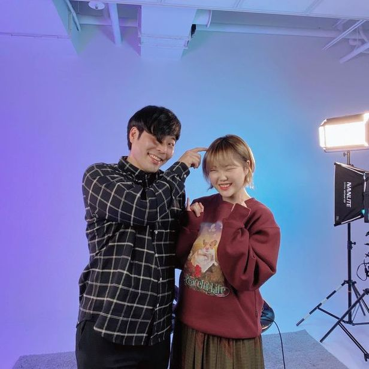

Who is 최준?
B대면 데이트 영상으로 시청자들에게 불쾌한 설렘을 준
개그맨이자 유튜버
유튜브 댓글 中 우리는 지금 최준이 시대에 살고있다.
하지만 그 시대에 살고싶은 건 아니다.
가학적 힐링이라는 새로운 장르의 개척자
HAIR? : 쉼표 머리
하루종일 한 쪽눈을 가리며 촬영을 하느랴 시력저하가 되고 있다고 함.
대세 인증 중인 최준 with 콜라보
